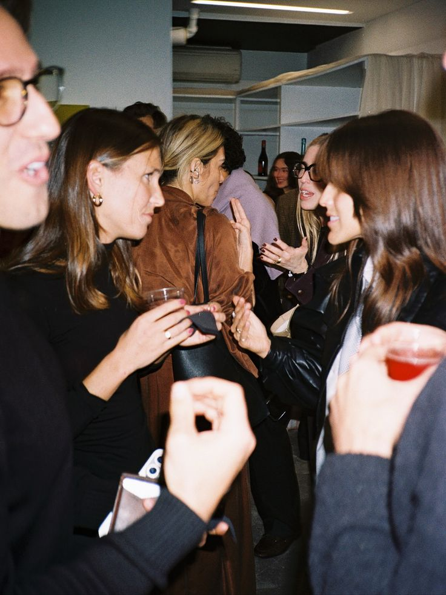
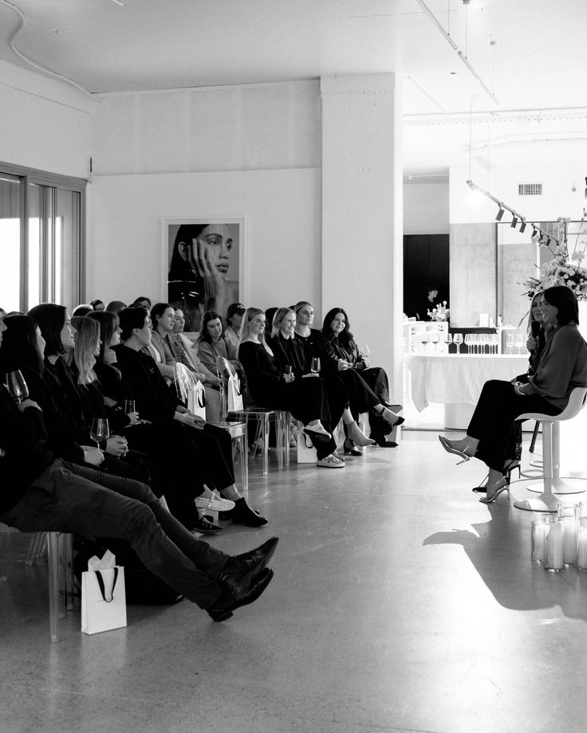

Personas que conectan
Gestiono la integración de comunidades internacionales desde cero. Coordinación operativa de eventos mensuales, nexo entre proveedores y clientes, y creación de contenido en vivo para asegurar una experiencia de marca inolvidable y fluida.
gestionados
conectadas
Gestión de eventos
Del montaje previo a la bienvenida final. Lidero la operativa in-situ, coordinando equipos externos y garantizando la excelencia en el trato al cliente. Mi prioridad: que la logística sea invisible y la experiencia, perfecta.


Contacto · Preparación · Organización · Seguimiento · Dia del evento
Customer Experience
Experta en dinamización de espacios internacionales. Actúo como punto de unión entre la marca y el usuario, supervisando que cada detalle —desde la logística hasta la acogida— refuerce el sentimiento de pertenencia a la comunidad.
